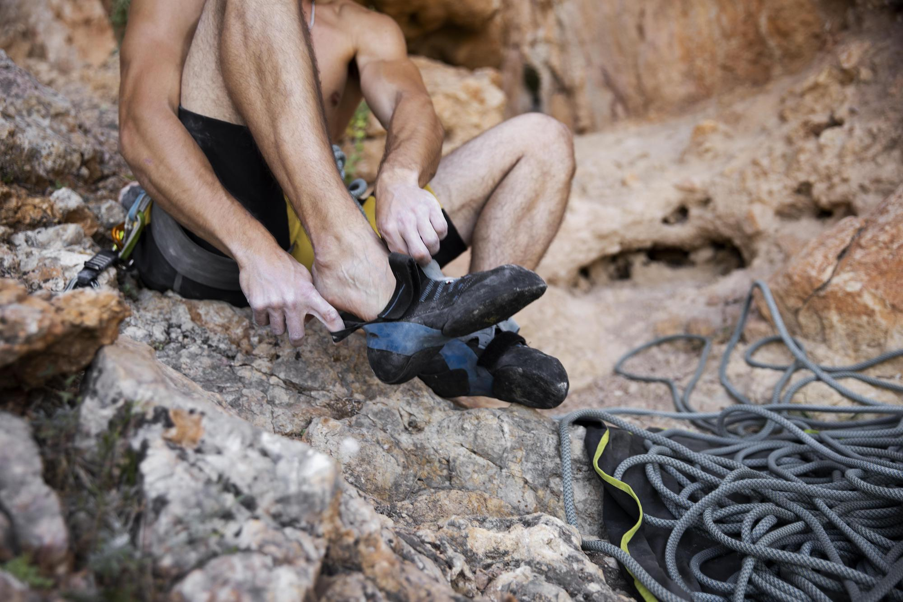

Climbing Harness

You'll need a climbing harness unless you're bouldering. Your waist and thighs are put in a rock climbing harness, which enables you to belay your companion and attach to the rope safely for climbing and rappelling. Make sure you purchase a brand-new harness for safety and comfort from a trustworthy supplier.
Climbing shoes
Early climbers wore mountaineering boots, but today we wear rubber shoes that are light and snug. These provide you a greater grip on the rock and help you to wedge your toes into tight spaces to get better grips. The appropriate size of climbing shoes might appear too tiny because of how snug they fit but that is okay, and means you are getting the right size.
Belay Device
It's likely that you'll be climbing with a partner at first. after it's your turn to stay on the ground and belay your partner as they climb, you'll feed the rope through your belay device after it is fastened to your harness. You'll also feed the rope through it when you're rappelling back down the rock after a climb. These are typically composed of aluminum and available in both easier manual braking variants as well as more difficult assisted braking systems that do some of the work.
Locking Carabiner Device

You'll need a locking carabiner to secure your belay device to your harness, and you will probably want another one to secure your chalk bag as well. A little D-shaped piece of metal with a locking gate is known as a carabiner. You'll want extra carabiners as you begin lead climbing and setting up your own anchors. Locking carabiners help provide extra safety. When using such a device the climber must always ensure they are locked and closed before each use.
Chalk Bag and Chalk
A chalk bag is just a little canvas bag with a loop that often fastens to the rear of your harness with a carabiner so you can reach back and collect some chalk if your hands start to sweat heavily. The chalk also helps give some grip to your hands and whatever surface you may be climbing. Loose chalk that is sold in resealable packages is known as climbing chalk. Before leaving the house, you can pour a bit inside your climbing backpack.
Tape for blisters
One thing that is not anticipated when it comes to joining the climbing world is injury. Rock climbing takes a tole on your body, especially the skin on your hands. By taping up ripped skin and calluses the climbing will be able to continue! Taping will offer protection to your skin and give relief to any pain. Taping provides a protective layer which can help prevent from future injury while afording extra strength to finish out your climb.